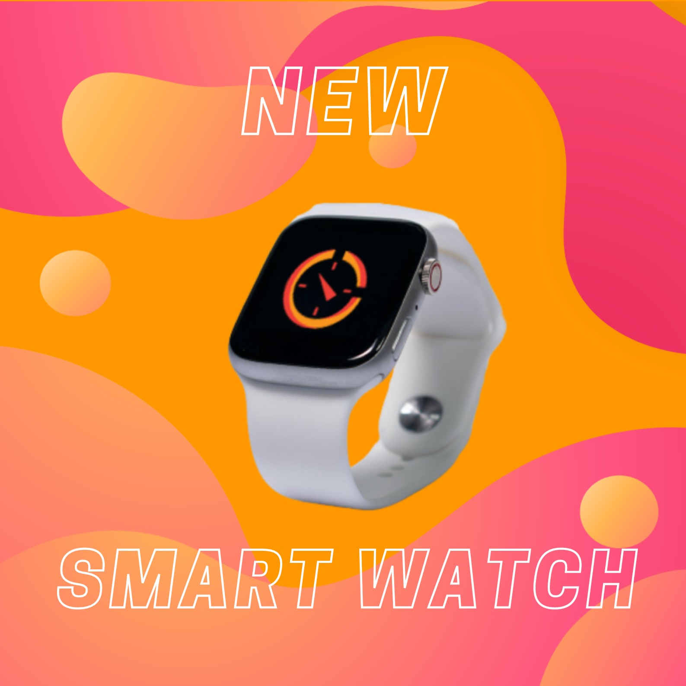

Learn more about our product
A smart-watch full of wonderful functions.
Besides a communication device, CornoKidz 1.0 also aims
to
lead our kids a healthy and creative lifestyle.
We want to change the hand watch into a powerful communication device with kid-friendly features.

A smart-watch full of wonderful functions.
Besides a communication device, CornoKidz 1.0 also aims
to
lead our kids a healthy and creative lifestyle.
Many parents are fear of letting their kids have a phone at a early age. Therefore, CronoKidz 1.0 with
4G
mobile phone and GPS tracker can be the best alternative nowadays.
Moreover, we are developing an application to help you track the phone usage through both IOS and
Android devices. The watch will send a notification to your phone in case of a unknown number. And do
not worry, your children will not have any idea about the this.
These days, kids tend to stick their eyes into the blue screen. We add this rewards function to
encourage kids to spend more time doing outdoor activities
This function works as a health tracker for kids, wheares parents can set goals for their children. When
they achieve a new record, a screen with lively animation and sound will appear to boost children's
enthusiasm.
The CornoKidz 1.0 can have customized background by adding photo through the application on mobile
phone. As all the kids always want to have something unique, this function is designed to encourage
children to be creative
In the future, we will also offer custom band based on children's interest. Cronoxo will try our best to
make collaboration with popupular kid-friendly franchise, which can meet the growing demand of our kids
We are looking for partners to help us finish this project.
Every donor will receive 30% sale off when
the product is brought out. Moreover, donors will also receive a free custom bands for the first
purchase with us.
Founded in 2019 by Alexander Merrill, Cronoxo still attempts to gain more popularity in Australia and worldwide. At first, we want to create health tracker smart-watches; however, we found out that there are not many kid-friendly smart-watches during research. Thus, Cronoxo decides to produce and develop devices that can lead our kids into a positive lifestyle.
Cronoxo is dedicated to provide the best health tracker and communication device for parents and kids with creativity, care and understanding.